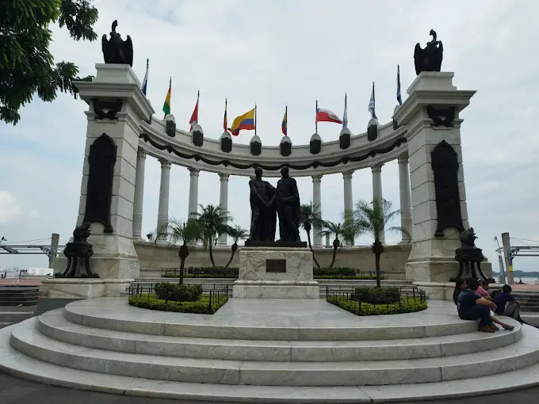

It was in the early 90s that someone got bored of hearing that their city, Guayaquil, was ugly. Then someone else got bored of the same thing, and so on. The main port of Ecuador had grown in an uncontrolled manner, and with little affection and care from the authorities and its inhabitants. That began to change in 1992, with intense work to renovate Guayaquil. Thus, the most populated and largest city in Ecuador became a clean and modern city, with lake walks, restaurants, and green, well-kept parks (in addition, of course, to security cameras on many sides).


We found our country as the greatest place in the world.
Through decades our country has different places to visit, and Guayaquil is one of the best place to learn and visit, learn about our culture, gastronomy, and also the history of how we grow as a country. We recommend you to visit the Historical Park that has a lot of activities and gives us a lot of guides through our country.

In Guayaquil
- High: 57°
- Low: 37°
- Chance of Precipitation: 45%
- Wind: 15mph NW
- Wind Chill: °